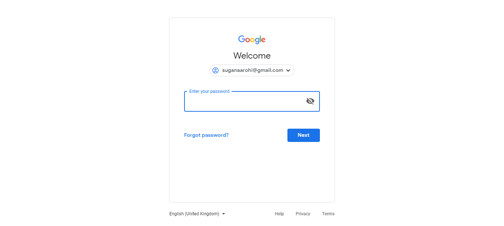

Reflections of Visionary Minds

The following table lists down the Sequential Steps during the Run
TestCase Name: testLoginWithValidData : Iteration 1
Time Taken for Executing: 7 Sec
Current Run Number: Run 3 Method Type: Test Method
TestCase Name: testLoginWithValidData : Iteration 1
Time Taken for Executing: 7 Sec
Current Run Number: Run 3 Method Type: Test Method
Requirement Coverage/ TestCase Description
Requirement Coverage/Build Info/Cycle - Description
Execution Platform Details
| O.S | : | Windows 10, amd64Bit, v10.0 |
| Java | : | 1.8.0_171 |
| Hostname | : | DESKTOP-T8LR42R |
| Selenium | : | 3.14.0 |
Summary
| Status | : | Failed |
| Execution Date | : | 17-Dec-2018 06:12:16 |
| Browser | : | chrome,v70.0.3538.110 |
Author Info
| Author Name | : | Unknown |
| Creation Date | : | Unknown |
| Version | : | Unknown |
| System User | : | User |
| S.No | Step Description | Input Value | Expected Value | Actual Value | Time | Line No | Status | Screen shot |
|---|---|---|---|---|---|---|---|---|
| 1 | Element : [[ChromeDriver: chrome on XP (626c5267bbeac9faa01d0617547c4f81)] -> id: identifierId] filled by an input: suganaarohi@gmail.com Successfully! | 1 Sec | 347 |  |
||||
| 2 | Element: [[ChromeDriver: chrome on XP (626c5267bbeac9faa01d0617547c4f81)] -> xpath: //*[text()='Next']] got clicked Successfully! | 168 Milli Sec | 347 | |
||||
| 3 | Element : Proxy element for: DefaultElementLocator 'By.id: //*[@name='password']' is unable to find or unable to fill by input: 123456 | 6 Sec | 353 |  |
||||
| 4 | Unable to perform Click operation on Element: Proxy element for: DefaultElementLocator 'By.xpath: //*[@id=\"passwordNext\"]/content/span' | 328 Milli Sec | 353 | |
 |
{kind=link}
{kind=link}
Reason for Failure: [ATU Custom Reporter Step Failed Exception]
Click Me to Show/Hide the Full Stack Trace
[ATU Custom Reporter Step Failed Exception]
at atu.testng.reports.listeners.ATUReportsListener.onTestSuccess(Unknown Source)
at org.testng.internal.TestListenerHelper.runTestListeners(TestListenerHelper.java:70)
at org.testng.internal.Invoker.runTestListeners(Invoker.java:1389)
at org.testng.internal.Invoker.invokeMethod(Invoker.java:636)
at org.testng.internal.Invoker.invokeTestMethod(Invoker.java:719)
at org.testng.internal.Invoker.invokeTestMethods(Invoker.java:989)
at org.testng.internal.TestMethodWorker.invokeTestMethods(TestMethodWorker.java:125)
at org.testng.internal.TestMethodWorker.run(TestMethodWorker.java:109)
at org.testng.TestRunner.privateRun(TestRunner.java:648)
at org.testng.TestRunner.run(TestRunner.java:505)
at org.testng.SuiteRunner.runTest(SuiteRunner.java:455)
at org.testng.SuiteRunner.runSequentially(SuiteRunner.java:450)
at org.testng.SuiteRunner.privateRun(SuiteRunner.java:415)
at org.testng.SuiteRunner.run(SuiteRunner.java:364)
at org.testng.SuiteRunnerWorker.runSuite(SuiteRunnerWorker.java:52)
at org.testng.SuiteRunnerWorker.run(SuiteRunnerWorker.java:84)
at org.testng.TestNG.runSuitesSequentially(TestNG.java:1208)
at org.testng.TestNG.runSuitesLocally(TestNG.java:1137)
at org.testng.TestNG.runSuites(TestNG.java:1049)
at org.testng.TestNG.run(TestNG.java:1017)
at org.testng.remote.AbstractRemoteTestNG.run(AbstractRemoteTestNG.java:114)
at org.testng.remote.RemoteTestNG.initAndRun(RemoteTestNG.java:251)
at org.testng.remote.RemoteTestNG.main(RemoteTestNG.java:77)